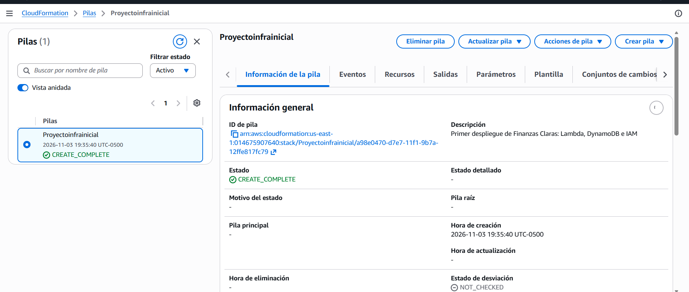
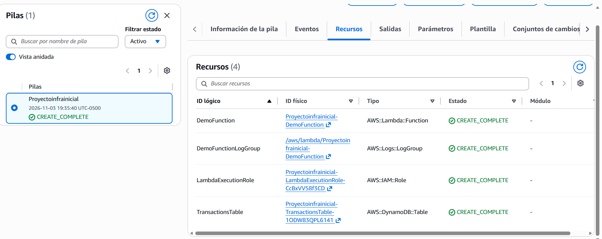
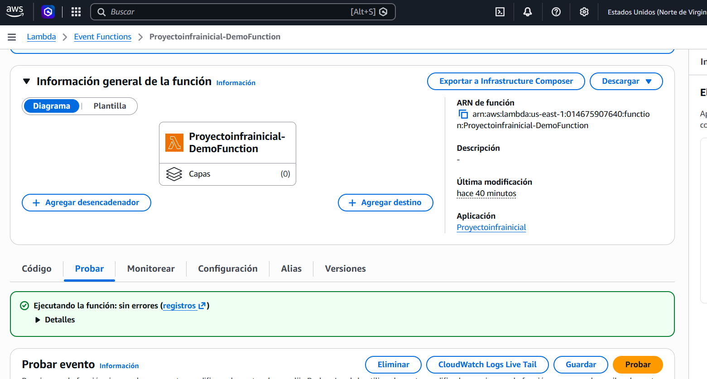
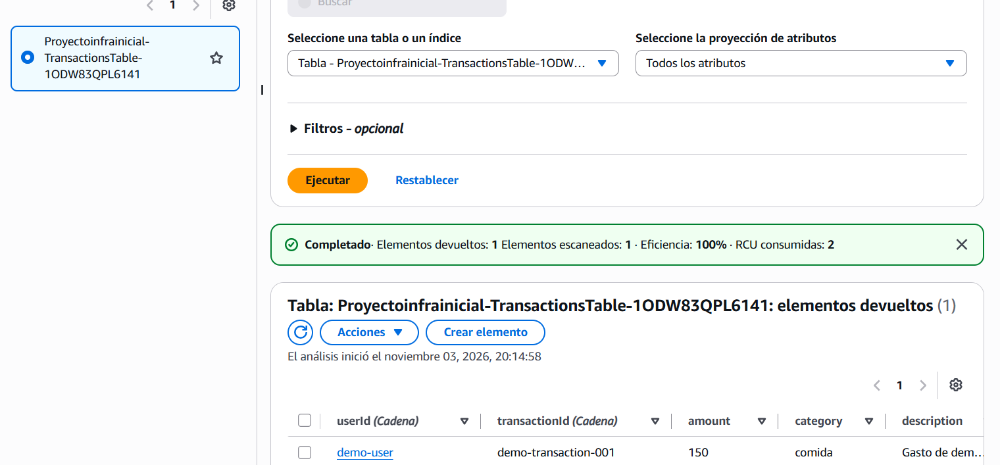
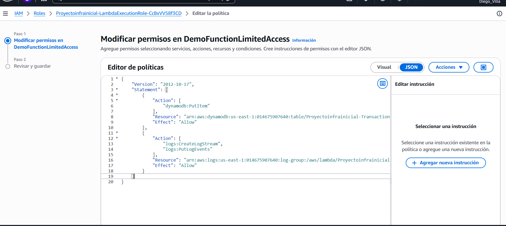
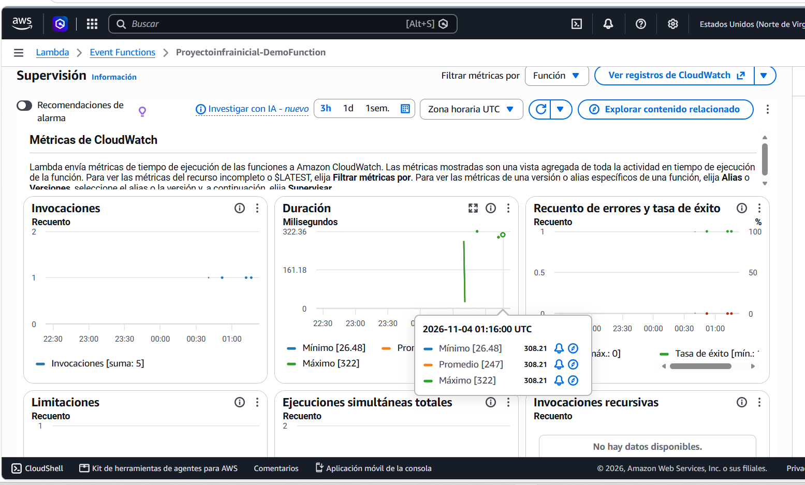
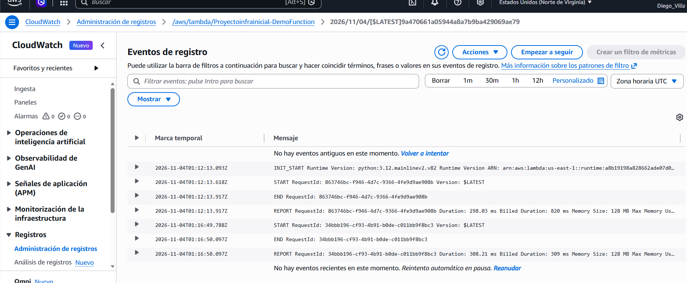

Finanzas Claras
Integración funcional de API Gateway, Lambda y DynamoDB con autorización IAM.
Región us-east-1 · Prueba del 5 de noviembre de 2026, hora de Cancún · evidencias con marcas UTC
Resultado de la entrega
Se desplegó una funcionalidad de extremo a extremo para crear y consultar movimientos de demostración. La API requiere solicitudes firmadas con AWS Signature Version 4 (SigV4). La llamada sin firma fue rechazada por API Gateway.
La prueba SigV4 se ejecutó con el perfil IAM Diego_Villa. La simulación de políticas confirmó que los cuatro miembros del grupo tienen permiso de invocación GET y POST; las credenciales de los otros tres no se usaron para enviar llamadas.
Arquitectura desplegada
solicitud firmada IAM
HTTP API
rutas GET y POST
Python 3.12
PAY_PER_REQUEST
El endpoint base es https://3wsywaa6oh.execute-api.us-east-1.amazonaws.com. La ruta POST registra; la ruta GET consulta por el usuario de demostración.
Ver fuente Mermaid
El archivo fuente completo está en architecture.mmd y también se incluye en el README.
Componentes y relaciones
| Componente | Función y configuración | Relación |
|---|---|---|
| API Gateway HTTP API | POST /transactions y GET /transactions; ambas rutas protegidas con AWS_IAM. | Verifica SigV4 y llama a Lambda. |
| Lambda DemoFunction | Python 3.12, 128 MB, timeout de 10 segundos. | Recibe el evento HTTP, valida los datos y llama a DynamoDB. |
| DynamoDB TransactionsTable | Modo PAY_PER_REQUEST; claves userId y transactionId; cifrado habilitado. | Lambda usa PutItem y Query con permisos limitados a esta tabla. |
| IAM | Grupo Proyecto_Infraestructura con cuatro integrantes; política existente AdministratorAccess. El rol de Lambda es distinto del grupo de usuarios. | El grupo permite a sus miembros administrar AWS y firmar solicitudes; Lambda asume su rol para acceder a datos y logs. |
| CloudWatch Logs | Grupo /aws/lambda/Proyectoinfrainicial-DemoFunction; retención de siete días. | Conserva los eventos de ejecución de Lambda. |
| CloudFormation | Pila Proyectoinfrainicial, estado UPDATE_COMPLETE. | Administra todos los recursos definidos en template.yaml. |
Pruebas y métricas
| Prueba / métrica | Resultado observado | Estado |
|---|---|---|
| Solicitud GET sin firma IAM | HTTP 403 | Correcto: acceso rechazado |
| POST firmado por IAM | HTTP 201; transactionId único devuelto | Correcto: movimiento creado |
| GET firmado por IAM | HTTP 200; respuesta contiene el movimiento recién creado | Correcto: persistencia verificada |
| POST con monto negativo | HTTP 400; entrada rechazada antes de guardar | Validación correcta |
| Invocaciones Lambda en la última hora observada | 8 invocaciones; 0 errores; 0 throttles | Correcto |
| Duración Lambda | Promedio 132.4 ms; máximo 293.54 ms | Correcto |
| CloudWatch Logs | 35 eventos en el archivo de evidencia de la ventana consultada | Registros disponibles |
| DynamoDB | 6 movimientos de demostración devueltos para demo-user | Persistencia confirmada |
Las métricas de Lambda se consultaron en CloudWatch para la hora anterior a la verificación; pueden variar al abrir de nuevo la consola. Horas de CloudWatch están en UTC.
Resultados de la prueba API · Resumen de CloudWatch · Eventos de CloudWatch Logs · Estado y recursos de CloudFormation · Acceso del grupo IAM
Problemas técnicos detectados y corregidos
| Problema | Corrección | Prueba de cierre |
|---|---|---|
| La Lambda original siempre escribía con transactionId demo-transaction-001; PutItem podía reemplazar el registro anterior. | Se genera una clave nueva con fecha UTC y UUID. | DynamoDB mantiene el registro anterior y devuelve varios movimientos con IDs diferentes. |
| El rol de ejecución inicial permitía PutItem, pero no Query. | Se agregó dynamodb:Query restringido a la tabla TransactionsTable. | La ruta GET firmada por IAM devolvió 200 con los elementos. |
| El clon del repositorio tenía AuthorizationType NONE, distinto de la pila AWS_IAM; un nuevo despliegue podía abrir rutas anónimas. | Se alineó el repositorio con la plantilla desplegada y se conservaron las dos rutas AWS_IAM. | GET sin firma devolvió 403; GET y POST firmados funcionaron. La simulación confirmó permiso para los cuatro usuarios. |
La IA se utilizó para revisar la plantilla y la política, identificar causas, proponer correcciones y apoyar la interpretación de las pruebas. La verificación se hizo contra AWS.
Evidencias visuales entregadas
Ver capturas del despliegue inicial y pruebas de Lambda







Alcance pendiente
Este avance no es todavía el dashboard completo. S3, Cognito, pantalla de inicio de sesión, reportes, categorías configurables, tarjetas, recordatorios, PATCH, DELETE e integración bancaria no están desplegados. La API está limitada a datos ficticios y a demo-user. Para usuarios finales, el siguiente paso es un JWT authorizer con Cognito y tomar el identificador de usuario desde su token; no se deben aceptar identidades de usuario desde el body como mecanismo de seguridad.
Costos y seguridad
No se desplegó EC2 ni NAT Gateway. API Gateway HTTP API, Lambda, DynamoDB bajo demanda y CloudWatch cobran por uso; no se garantiza costo cero. La retención de logs es siete días.
Las rutas no aceptan llamadas anónimas. Los cuatro usuarios del grupo tienen permisos administrativos amplios ya existentes; esto permite la práctica y la invocación IAM, pero no sigue mínimo privilegio. No se almacenaron claves de acceso en IaC, pruebas ni este HTML.
README actualizado · Plantilla CloudFormation · Fuente del diagrama